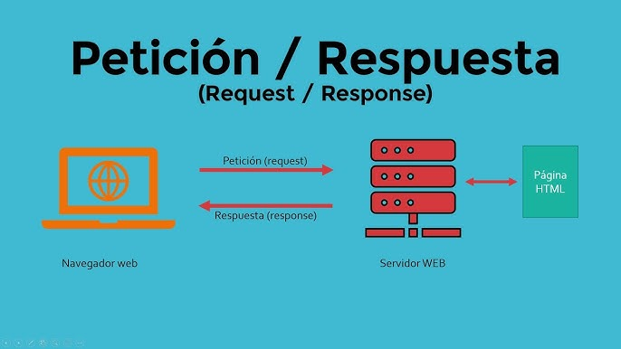

Protocolos de Comunicación y Formatos de Datos
El paradigma de solicitud-respuesta es fundamental en la comunicación entre sistemas distribuidos, donde un cliente envía una solicitud y un servidor responde. Este paradigma es la base de muchas aplicaciones modernas, desde la navegación web hasta la interacción entre microservicios.
El protocolo de transferencia de hipertexto (HTTP) es la base de la comunicación en la web. HTTPS es su versión segura, que utiliza cifrado SSL/TLS.
gRPC es un framework de RPC que utiliza HTTP/2 para la comunicación y Protobuf para la serialización de datos, ideal para servicios de alto rendimiento.
MQTT es un protocolo de mensajería ligero, basado en publicación-suscripción, utilizado principalmente en entornos IoT.
JSON (JavaScript Object Notation) es un formato de datos ligero y fácil de leer que se utiliza comúnmente en APIs RESTful.
XML (Extensible Markup Language) es un formato de datos que permite definir estructuras de datos complejas, utilizado en servicios como SOAP.
Protobuf es un formato de datos binario desarrollado por Google, diseñado para ser más eficiente que JSON o XML.
En este caso práctico, exploramos cómo una API RESTful utiliza el paradigma de solicitud-respuesta. Un cliente (por ejemplo, un navegador) realiza una solicitud HTTP GET a una API, que devuelve una respuesta en formato JSON.
GET /api/v1/usuarios HTTP/1.1
Host: api.ejemplo.com
Accept: application/json
HTTP/1.1 200 OK
Content-Type: application/json
{
"usuarios": [
{"id": 1, "nombre": "Juan", "email": "juan@example.com"},
{"id": 2, "nombre": "María", "email": "maria@example.com"}
]
}
Este flujo muestra cómo se maneja la interacción básica entre un cliente y un servidor utilizando protocolos de comunicación (HTTP) y formatos de datos (JSON).
